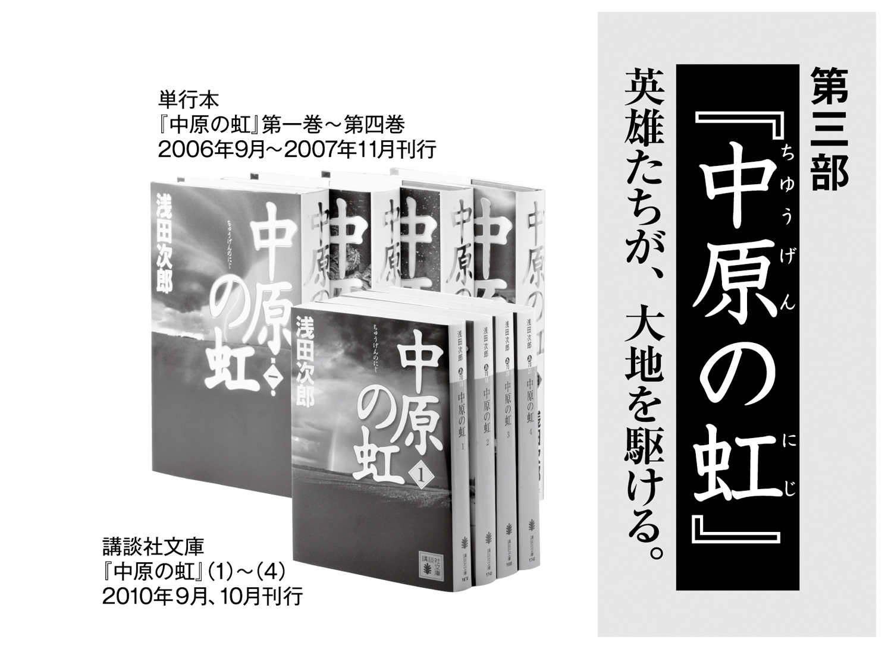

| 『蒼穹の昴』シリーズ２０周年！ 特別ガイドブック | |
| Unknown | |
| 講談社 (2016) | |
原点は漢詩との出会い
──浅田さんが描き続けてきた激動の近世中国をテーマにした小説群は、いまでは壮大な歴史エンターテインメントとして人気を博しています。その嚆 矢 ともいうべき『蒼 穹 の昴 』が刊行されて二十年ということもあり、改めて本シリーズの誕生についてうかがいたいのですが。
浅田 『蒼穹の昴』は書き下ろしで一八〇〇枚の小説です。皆さんご覧になったことはないと思いますが、手書き原稿一八〇〇枚って、人間は持ち運べません。腰痛めます（笑）。それで、当時は婦人服の販売をやっていたので、営業のワゴン車で講談社まで運び、台車に原稿を載せて、昔の講談社の本館の入口までゴロゴロと押して行った。入館手続きをしようとしたら守衛さんに「納品は裏にまわって」っていわれて。納品？ 出入りの業者か何かかと思われたんでしょうね。ま、納品といわれれば納品には違いないかと、納得して裏から入ったんですけど、すれ違う人がみんなじろじろ見て通り過ぎて行くんですよ。
あとで気がついたんですが、二十年前の当時すでに原稿執筆はワープロやパソコンが主流で、手書き原稿なんて出版社の社内でも珍しい存在になっていたんですね。
──『蒼穹の昴』は清朝末期を舞台としていますが、この時代の中国を書こうと思われた動機を教えてください。
浅田 私が生まれて初めて衝撃を受けた文学体験が〝中国〟なんです。中学一年になって授業で漢詩を習いましたが、そのとき「世の中にこんな美しい文学があるのか」と感激したんです。
それで図書館に通いつめて中国関連の書物を読みあさったんですが、そのなかに、当時、京都大学の現役教授だった宮崎市定先生の著作がありました。これがまたすばらしかった。昔の学者は文章がうまいものだからその文章に魅了されてしまって、小説を読むより面白かった。私が初めて買った全集は、鷗外でも漱石でも谷崎でもなく、古本屋で見つけた『宮崎市定全集』でした。
宮崎先生の専門分野は近世中国、つまり明代と清代における科挙制度と官僚システムでした。だから自然にこうしたことに興味がうまれましたし、その面白さにすっかりはまってしまいました。宮崎先生の著作を読みながら『儒林外史』（呉敬梓）も読んだなあ。これは科挙について書かれた有名な小説ですが。
いずれにしても、私が中国史の中でもとりわけ清朝に対して魅力を感じ、『蒼穹の昴』の執筆にもっとも大きな影響を与えたのは宮崎先生の著作だったということは間違いありません。
──『蒼穹の昴』の刊行は一九九六年です。漢詩との出会いを原点とするならおよそ三十年後になります。このタイミングになったのには理由があるのですか。
浅田 史料を渉猟しようと思ったらきりがない。充分な知識を備えてから書こうなんて思っていたらいつまでたっても書けるわけがないんです。そこで「書くのは今だ！」と思う瞬間があるのですが、『蒼穹の昴』に関しては、主人公が春 児 というかわいらしい少年だったことが〝そのとき〟をもたらしたんだと思います。
この作品は構想に一年、原稿執筆に半年をかけました。つまり書くことを決心したのは、私が四十を少し過ぎたころになります。男性は誰でもその身の内に「少年」を宿しているものだけれど、年齢が加わるとともにどんどんその気持ちが消えていくんですね。当時の私にはかろうじてその残 滓 があった。主人公の春児を描くにはそのときを逸してはならないと考えたんです。実際、あれから二十年を経た現在、同じように春児を書けといわれても不可能だと思います。
ところで少し話はかわりますが、多くの方は、小説家は文章を書くのが仕事だと思ってらっしゃる。しかし先ほど「構想一年、執筆半年」といいました。つまり何も書かずにもんもんと考えている時間の方がずっと長いんです。私なんか家人に「ぼうっとしてないで宅配便が来たら受け取って下さいね」なんていわれちゃうんですが、それは違うということは理解していただきたい（笑）。
──なるほど（笑）。作品が浅田さんの深い思索の賜 物 であることは、読者にも充分伝わっていると思います。
第五部『天子蒙塵』スタート
そんな本シリーズも、いよいよ『天 子 蒙 塵 』（第一巻・十月刊行、第二巻十二月刊行予定）で新展開を迎えます。まずタイトルの意味を教えてください。
浅田 これは紀元前、春秋時代の史料『春秋左氏伝』に出て来る言葉です。「天子塵 を外に蒙 る」。天子、つまり王がほこりまみれになって逃げるという、大変な異常事態を表しています。実は『蒼穹の昴』を書いたときに、すでにこの〝蒙塵〟のイメージが頭の片隅にあって、「〝蒙塵〟する人生とは」という問いかけは、シリーズに通底するテーマだと思っています。
──今回は溥 儀 と張 学 良 という二人の若き王に焦点を当てています。
浅田 溥儀は三回即位して三回退位した歴史上ただ一人の王です。〝蒙塵〟しまくっているんですね。二十七歳で満州における全権力を継承した張学良も領地を追い出されて〝蒙塵〟します。
──冒頭のシーンも〝蒙塵〟と呼べるものですね。国を追われた張学良がコンテ・ロッソ号でイタリアへと航海します。
浅田 居場所を奪われた張学良は船でイタリアへ向かうわけですが、あのシーンは取材旅行で訪れたヴェネツィアでひらめきました。「海洋史博物館」に行った際に目にとまったのが、豪華客船コンテ・ヴェルデ号の模型です。コンテ・ロッソ号ではなかったけれど、同型艦の精密な模型があった。
──取材旅行では船が実際に着岸した場所にも行かれたそうですが、冒頭のシーンの源泉になったのは模型の方だったんですね
浅田 船着き場では具体的なイメージは湧いてこなかった。冒頭のシーンどころか、小説の全体像すら見えてこない。これは弱ったなあと思いつつ、旅の最後の最後に寄った「海洋史博物館」であの模型を見た瞬間、コンテ・ヴェルデ号はコンテ・ロッソ号になり、私は小さな小さな張学良になって船のデッキに転がり込んだ。このとき物語のすべてができ上がった気がしました。やっぱり小説の神様は降りて来てくれたんだなと......。小説を書くためには膨大な情報を自身の中に集積します。しかしそれらを再構築してアウトプットするだけでは小説は成立しません。イメージが降りて来る瞬間、それがあってこそ娯楽小説は娯楽小説たりえると思います。
最後の皇帝・溥儀の離婚劇
──もうひとりの主人公・溥儀は映画『ラストエンペラー』（一九八七年公開）で主人公として描かれた事でも有名ですね。
浅田 映画の原作となった溥儀の自伝『わが半生』（ちくま文庫）は、映画がつくられるずっと前、私が二十歳の頃には読んでいました。中国共産党が書かせた自己批判の書であるし、矛盾する記述もあるんだけど、第一級の史料であることに疑う余地はありません。なによりも溥儀の人生がドラマチックで、世の中にこんなに面白い物語があるのかと思いました。本がボロボロになるくらいに読み込んだのを覚えています。
──小説では、溥儀について側妃の文繡 が語るという設定です。彼女の視点で溥儀を描くというのも新鮮に感じました。
浅田 溥儀の妃には正妃の婉 容 と側妃の文繡がいました。溥儀は男として不能だったから、事実上の夫婦関係はありません。その場合、彼ら三人の関係をどう呼べばいいのか。結局「家族」としかいいようがないんですね。文繡は歴史上初めて、そして唯一中華皇帝と離婚した皇妃です。私はこの離婚劇を書きたかった。「家族」とは何なのか、彼女が追い求めたものとは何だったのか。そして溥儀は彼女にとって何者だったか。
──十二月に刊行される第二巻には、『中原の虹』中でも読者に圧倒的な人気があった張 作 霖 の側近、馬 占 山 が登場します。とても魅力的な馬賊です。
浅田 これも二十歳ころの読書体験で、中国関連の本を片っ端から読んでいたころ、朽木寒三さんが書いた『馬賊戦記』（徳間文庫）という本に出会いました。これが抜群に面白くて、一章を読んだとたんに馬賊にハマった。若い頃は死ぬことなんて意識しないから、血沸き肉躍る決死の冒険譚なんかに憧れるわけですよ。それから馬賊というものをいろいろ調べるようになった。渡辺龍策さんの『馬賊頭目列伝』（徳間文庫）とか......。
馬占山は馬賊の中の馬賊みたいな男で、いろいろな史料に登場するんです。いわゆる俠客ですね。実は義俠的な精神というのは日本で始まったものではなく、中国には昔からあったんです。馬賊のつながりというのは、日本のヤクザの親分子分のつながりと似ている。義俠であることが馬賊の証しみたいなもので、そういうものが純粋培養されてできたのが馬占山という男のイメージです。
とはいえ、馬賊の存在自体は、日本の幕末期における新選組みたいなもので、大局的にはそれがなくても歴史は成立するんです。でも小説家としては、正史に登場する人物より、馬賊や新選組みたいな草 の群像に惹かれてしまうんですよね。
──物語の本筋とは関係がないのですが、麻雀牌の一 索 がなぜクジャクのデザインなのかという記述があり、雑学としても面白く読ませていただきました。
浅田 あれはちゃんとした出典があるわけじゃないんです。若い頃に出入りしていた雀荘に人呼んで〝物知りじじい〟というおじいさんがいたんです。「白は〝おしろい〟、中は〝口紅〟、 は〝緑なす黒髪〟」とかね、麻雀ウンチクをとうとうと語る生き字引みたいな人で、その人から聞いた話なんです。でもなぜそんな話をいまだに覚えているのかが不思議ですよね。「何十年後かにお前はこんな小説を書くんだから覚えておきなさい」と聞かせてくれたみたい。だから、白 太 太 みたいな人って実在するんだなあって思います（笑）。
これからの読みどころ
──『天子蒙塵』は「小説現代」で今も連載中ですが、これからの読みどころを教えてください。
浅田 流浪してゆく二人の「王様」を描いていきますが、話は満洲国の成立と、満洲国に翻弄されていく溥儀というのが一つの形となり、もう一つの形として、張学良はその後、西安事件というものに向かってどのように進んでいくのか、というのがあります。
今作で西安事件までを扱えるのかはわかりませんが、これは中国と日本、ひいては世界の運命を決定した大事件ですね。西安事件に対して、必ずしも肯定的でない人もいますが、考えればあそこで国共合作をされたというのは日本にとっては致命傷でした。あれで中国が手に負えなくなってしまった。あの事件がなければ、ちがう日本と中国の運命も、第二次世界大戦に突入しなかった可能性もあると思うんですけれど、ともかく日本にとっても中国にとっても決定的な出来事だった。その意味で張学良は日本にとってのキーパーソンでもあります。満洲事変後、不抵抗将軍と言われ、日本人がなめきっていたまさにその人によって日本は挫折するんです。
満洲国の繁栄と、その一方で起こる西安事件、そこに向かって話は進んでいきます。
──本シリーズでは全体をつなぐ重要なアイテムとして「龍 玉 」があります。それは天命を持つ支配者だけが手にできるもので、その器にない者が触れると五体が砕け散るとされる神器ですね。この「龍玉」の行方も気になるところです。
浅田 「龍玉」はこのシリーズには欠くべからざるものです。エンターテインメント小説のグランドプランとしては核心といってもいい。
乾隆帝は「権力は虚しい」と感じ、子孫に同じ思いをさせまいと、偽物を作って本物を隠してしまう。その偽物づくりを命じられたのが宣教師のカスチリョーネです。彼は布教のためにイタリアからはるばる渡って来たのに、実際は植民地政策の先兵として派遣されたにすぎないことに気づく。そして神への反逆を決意し、運命に逆らうものの具体としてのニセ龍玉づくりを引き受けたわけです。
「運命に逆らってこそ人間」。カスチリョーネが到達したこの思想は、はからずも西 太 后 も張作霖も共有しています。そしてそれは「龍玉」を発信源とする強力なメッセージでもあります。だからこのシリーズをじっくり読んでいただくと、何か得体の知れない力が湧いてくるはずです。今後も「龍玉」の行方に注目していただきたいですね。

あらすじ
極貧の少年・春児の姿に生き抜くことの尊さを見る傑作。
「汝 は必ずや、あまねく天下の財宝を手中に収むるであろう」──中国清朝末期、貧しい糞拾いの少年、李 春 雲 （春 児 ）は、老占い師、白 太 太 にこう予言を受ける。飢えに苦しみながら、春児はこの予言を希望に上京を決意する。
同じ村の地主の息子、梁 文 秀 は科挙試験を受けるため北京へ向かう。身分は違うがおさないころから兄とも慕う文秀を頼り、春児は都へと上った。
文秀は気の遠くなるような倍率の科挙試験に挑み、春児は自らの生きる道をさがしてある決断を下す。やがて、混迷する清王朝の中枢に、それぞれの形でかかわるようになる二人を待ち受ける宿命とは。
あらすじ
義和団事件のさなか、ひっそり命を落とした妃をめぐるミステリー
列強諸国に蹂 躙 され荒廃した清朝末期の北京。その混乱のさなか、紫禁城の奥深くでひとりの妃 が無残に命を奪われた。皇帝の寵 愛 を一身に受けた美しい妃は、なぜ、誰に殺されたのか。事件を知った日英独露の高官は、真実を究明することが、閉ざされかけたこの国の近代国家への扉を開くことになると、犯人捜しに乗り出した。
事件の鍵を握る人物たちに会いにゆく四人だが、全ての証言のつじつまが合わない。誰が噓をつき、誰が本当のことを話しているのか。確かめるために四人が最後に会った人物とは。そしてあまりに切ない事件の真相とは──。

あらすじ
稀代の〝成り上がり〟の馬賊・張作霖と女帝・西太后の死。シリーズ随一の雄編。
親も家もない流民の子、張 作 霖 は、あるとき老占い師に「汝、満洲の王者たれ」との予言を受ける。天命を持つ者だけが手にすることができる龍 玉 を、太祖ヌルハチの祖先の墓で手に入れた張作霖は、予言通り馬賊の長としてめきめきと頭角を現す。
李 春 雷 は、その馬と拳銃の腕を買われて張作霖の麾 下 に入った若者。春雷は子どものころに極貧の暮らしに耐えかねて家族を捨てた過去を持つが、そのとき捨てた弟が李春雲（春児）だった。
西太后の側近として大 総 管 太 監 に出世した春児は、ひょんなことから生き別れた兄の消息を知る。兄弟は再会できるのか。滅び行く王朝と、東北に勃興する勢力の行く末は。
あらすじ
天皇の密命を帯びた中尉が、昭和史の闇に迫る超一級ミステリー。
昭和三年六月四日未明、張作霖を乗せた列車が爆破された。「満洲某重大事件」と呼ばれたこの関東軍の暴挙に激怒した昭和天皇は、ひとりの陸軍中尉を皇居に呼び出し、真相の調査を命じる。
密命を受けて中国に渡った志 津 邦 陽 を待ち受けていたのは、張作霖とともに列車に乗っていて左足を失った、日本公使館付駐在武官の吉 永 将 という人物だった。吉永の話から、爆殺された日の張作霖の列車には、軍事顧問として幾人もの日本軍人が同乗していたことを知り憤る志津。しかし事件の闇はそれだけではなかった。
志津が天皇に宛てて綴 った、「満洲報告書」はその真実を伝えうるのか。
あらすじ
ついに紫禁城を追われた最後の皇帝。復 辟 か亡命か。側妃・文繡は「自由」を選んだ。
朝日新聞特派員の北 村 修 治 は、清朝最後の皇帝であった宣統帝溥 儀 と離婚した、もと皇妃の所在を偶然知った。特ダネをものにしようと、「万 朝 報 」の北京特派員として三十年以上、北京を見続けてきた岡 圭 之 介 を頼る。
岡は北村には思いも寄らないつてを使って、かつての淑 妃 、いまは北京で教師をしている文 繡 への取材を実現させる。
取材に対し口を開き始めた文繡が語ったのは、三百年つづいた王朝の最後に取り残された溥儀の家族が、いかにして紫禁城を追われ、北京を追われたかという壮絶な物語だった。溥儀と文繡、正室の婉 容 。時代の渦に吞み込まれた三人の「家族」の悲劇。